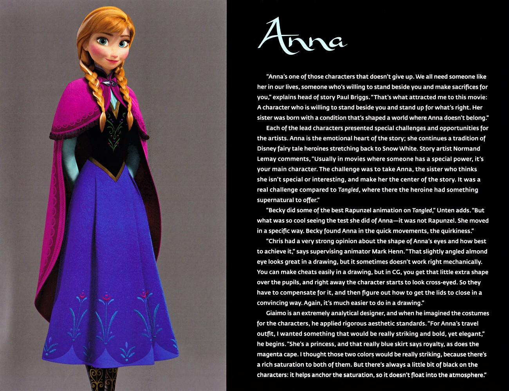

📖 故事 · 角色剧情
⑩ Rita 身世：刻意模糊
角色剧情
《危险秘密》仅说阿格纳生母 Rita"离开自己的王国嫁入阿伦黛尔、婚后抑郁逃离并抹除记忆"，未明言其为北境人；粉丝常据此推测，但本书保持模糊，条目中勿下定论。而《Polar Nights》扩写为 Rita 逃离后救下海盗…

安娜 · 角色设定开篇Rita 身世的刻意模糊——安娜的角色开篇之页提醒我们：有些背景天生就留白。 | 来源：官方设定集《The Art of Frozen》
📖 ⑩ Rita 身世：刻意模糊
《危险秘密》仅说阿格纳生母 Rita"离开自己的王国嫁入阿伦黛尔、婚后抑郁逃离并抹除记忆"，未明言其为北境人；粉丝常据此推测，但本书保持模糊，条目中勿下定论。而《Polar Nights》扩写为 Rita 逃离后救下海盗女 Inger。
来源：《危险秘密》· 第8节；《Polar Nights》· 第8节
📌 本页要点
你正在阅读《故事》卷的「⑩ Rita 身世：刻意模糊」。本页由电影正典、官方设定集与官方小说综合梳理，可作为该主题的速查入口；右侧目录可快速跳转到本页各小节。